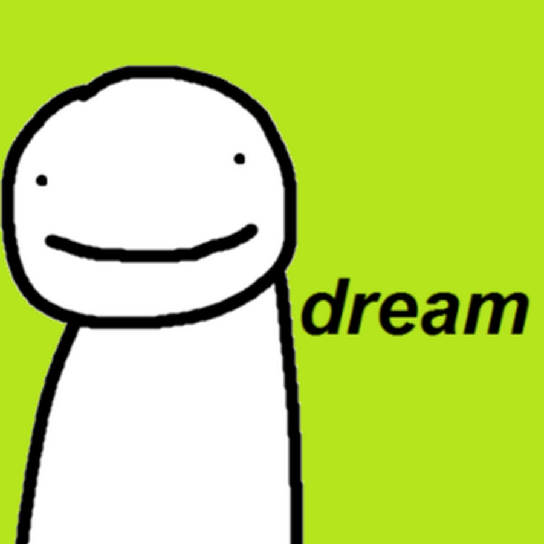

Dream (born August 12, 1999)[1][2] is an American[3][4] YouTuber and Twitch streamer known primarily for Minecraft content. He began his YouTube career in 2014 and gained substantial popularity in 2019 and 2020 having uploaded videos based around the game Minecraft. He is well known for his YouTube series Minecraft Manhunt, and for speedrunning Minecraft.[5][6] Content created in his Dream SMP Minecraft server has also attracted considerable attention.[7] As of June 6, 2021, his seven YouTube channels have collectively reached over 34 million subscribers and over 2.36 billion views. YouTube awarded Dream the Streamy Award for Gaming in 2020.[8]
This is how Dream looks in Minecraft

Click on the image below to know more about Dream
